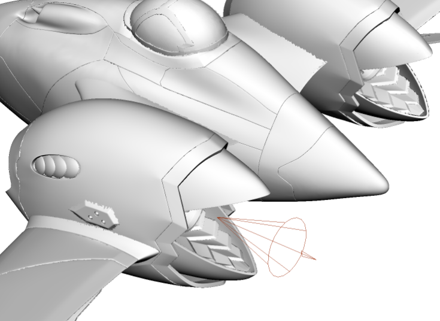

太空船

在本教程中，我们将介绍如何使用 standard_surface 着色器创建逼真的材质（例如，玻璃和金属）。我们还将使用 skydome_light 结合 HDR 图像来替换现有场景的照明，以实现更有效的控制，并呈现更逼真的外观。最后，我们将组合使用以下两项将部分喷射推力添加到排气口：聚光灯和 *atmosphere_volume*。
要下载对应的 Maya 场景文件，请单击此处。
着色
将太空船模型导入场景中。它包含各种 Blinn 和 Phong 着色器。我们要将这些着色器转化为 MtoA 内物理上更精确的着色器。幸运的是，我们可以使用“属性编辑器”(Attribute Editor)窗口中的着色器“类型”(Type)菜单来转化。我们主要使用多用途的 standard_surface 着色器。
体
- 首先将太空船的“体”(Body) Blinn 着色器转化为 standard_surface 着色器。将贴图 (ship_body_diffuse.tga) 连接到 base_color 和 Bump map connection (ship_body_normal.tga)。
- 您还需要连接“镜面反射”(Specular)*和 *emission_color 贴图。
- 将文件粗糙度贴图 (ship_body_roughness.tga) 连接到 standard_surface 着色器的 pecular_roughness 属性。您可以使用场景中的 Maya RemapValue 工具节点重映射 specular_roughness 值。
- 白炽灯文件贴图 (ship_wings_emissive.tga) 应连接到 standard_surface 的 emission_color*。将 *emission_scale 增加到 1。
| _自发光(Emission)_：0 | _自发光(Emission)_：1 |
玻璃座舱
我们为座舱玻璃指定一种玻璃材质。在此场景中，玻璃的建模没有厚度。这样将无法正确渲染，因为玻璃在现实世界中是有厚度的，而 Arnold 是物理上精确的渲染器。选择玻璃对象并稍微挤出。
| 薄曲面：玻璃作为实体对象错误折射。 | 挤出的玻璃：座舱通过玻璃正确折射。 |
确保法线朝向正确的方向。渲染逼真的玻璃时，这是必不可少的。
法线指向正确的方向（向外）
- 为座舱玻璃指定一个 standard_surface 着色器，并将它重命名为“glass”。将 base_weight 减小为 0，将 specular_roughness 减小为 0。
有关镜面反射菲涅尔的详细信息，请单击此处。
- 将 transmission_weight 增大为 1，使玻璃完全透明。将“折射率”(IOR)*更改为玻璃的折射率 (1.5)。如果要为玻璃添加染色，请将 *transmission_color 更改为灯光颜色。
信息：有关渲染玻璃曲面的详细信息，请单击此处。
照明
Ai 天穹灯光
- 创建一个 skydome_light，并将一个 HDR 图像连接到它的“颜色”(Color)属性。在本例中，我们使用的 HDR 图像摘自此网站。
- 如果您对照明感到满意并准备好进行最终渲染，请将 skydome_light 中的“采样数”(Samples)增加到 3，以减少任何阴影噪波。否则，请在使用 IPR 测试渲染时将它保持为 1。
推进器
我们将使用 Maya 聚光灯来表示从排气口发射的喷射推力。
聚光灯
- 创建一个聚光灯并将其定位，使其指向推进器的外面，如下图所示。

spot_light 定位在排气口内
- 将聚光灯的“曝光”(Exposure)增加到 15 左右。
- 启用 color_temperature，并将“温度”(Temperature)更改为 3500 左右。这将为灯光提供暖色调。
大气体积
要在视觉上呈现推力效果，我们必须先启用 *atmosphere_volume*。
转到“渲染设置”(Render Settings)的环境(Environment)*选项卡。将 *atmosphere_volume 连接到“大气”(Atmosphere)属性。
如果渲染场景，则不会看到任何结果。这是因为“密度”(Density)默认为 0。将其增加到 1，并使用 IPR 渲染场景。
默认情况下，聚光灯的圆锥体起点太窄。我们可以使用聚光灯的“Arnold”选项卡下的 lens_radius 属性来增加它。将其增加到 100 左右。
 |
|
| _lens_radius_：0 | _lens_radius_：100 |
灯光衰退过滤器
排气口推力显得过长。我们可以使用 light_decay 过滤器来限制聚光灯的灯光距离。
- 在“灯光过滤器”(Light Filters)选项卡下，将 light_decay 过滤器添加到聚光灯。
- 启用 use_far_attenuation*，并将 *far_end 增加到 600 左右。
| light_decay 过滤器添加到 spot_light | _use_far_attenuation_：启用 |
在下图中，您可以看到添加 light_decay 过滤器对聚光灯衰减的影响：
| _far_end_：0 | _far_end_：600 |
渲染
采样
打开“渲染设置”(Render Settings)窗口中的采样(Sampling)。对于测试渲染，“摄影机(AA)”(Camera (AA))采样数设置为 3 已足够。但是，对于最终帧渲染，至少需要将它增加到 5。
有关采样的简要手册，请单击此处。
Arnold 日志
使用 MtoA 渲染场景时，建议查看渲染设置(Render Settings)窗口的*诊断(Diagnostics)*选项卡中的 Arnold 日志。此日志文件将显示出现的警告和统计信息，这些信息有助于对场景文件进行诊断。
有关如何阅读渲染日志的手册，请单击此处。
就是这样。祝贺您已完成了本教程。现在我们要去探索新的渲染世界！